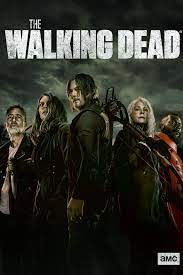

The 100, Kass Morgan'ın aynı adlı roman serisine dayanan bir bilim kurgu dizisidir. Dizi, 2014 yılında CW kanalında yayınlanmaya başlamıştır. Hikaye, nükleer felaketten sonra hayatta kalan insanların uzayda yaşayan bir grup gençle birlikte Dünya'ya dönüşünü konu alır. Dizi, hayatta kalma, insan ilişkileri ve toplum yapısı gibi temaları işler.

The Walking Dead, Robert Kirkman'ın aynı adlı çizgi roman serisine dayanan bir korku dizisidir. Dizi, 2010 yılında AMC kanalında yayınlanmaya başlamıştır. Hikaye, zombi kıyametinin ardından hayatta kalan insanların mücadelesini konu alır. Dizi, karakter gelişimi ve insan ilişkileri üzerine yoğunlaşırken, korku unsurlarını da barındırır.